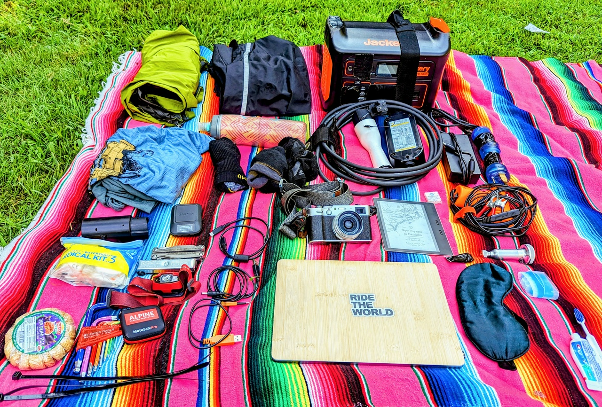
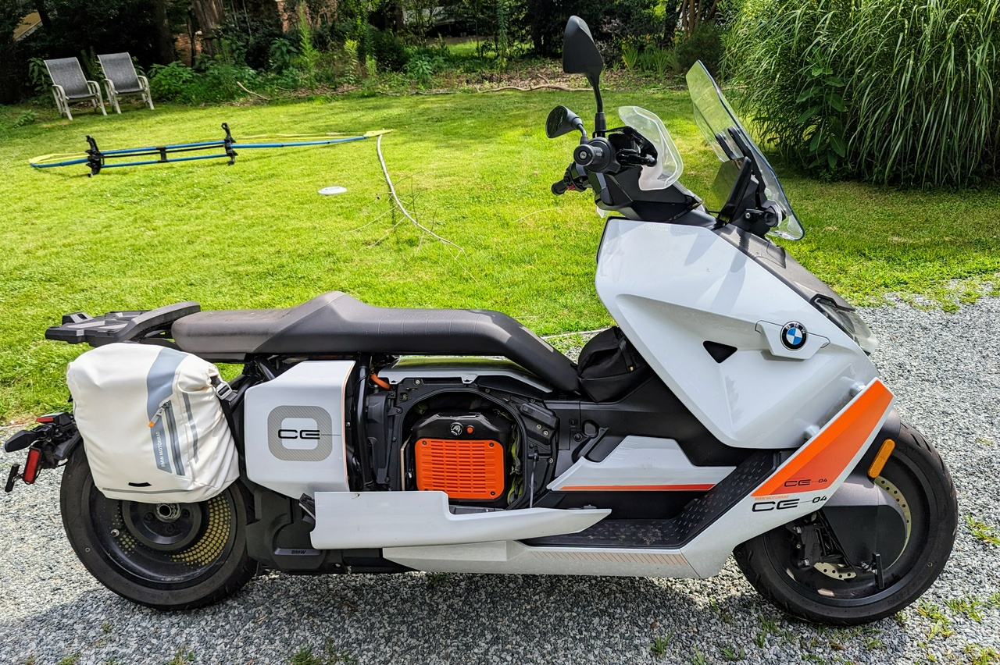
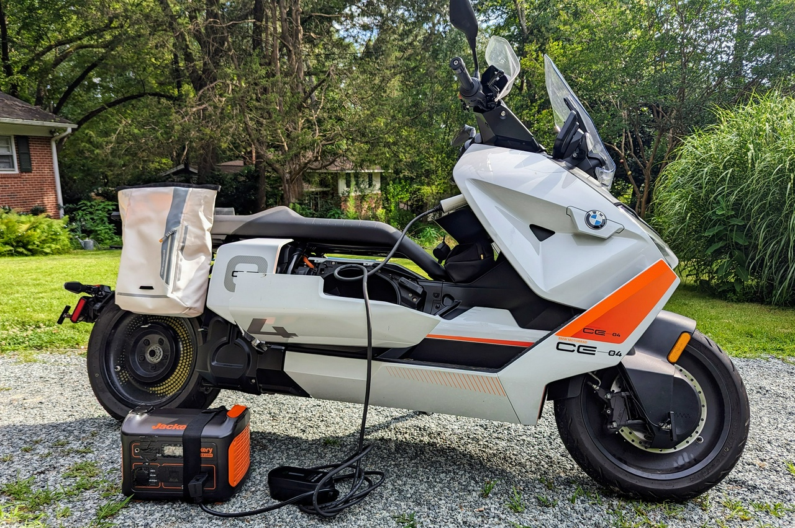

In Search of Native Lands: Preparation
Today I packed up the BMW CE-04 and did a range test to see how far I could get on North Carolina rural highways with everything: 62 miles, just as expected. What I packed is a bit different than what I would have packed had I been doing a ride on my GS's of yore:

Here's what I've packed:
- Emergency charging gear: J1772 cable, Jackery 1000 Power bank, adapters (TT30, 30A, 50A, Tesla), charger for Jackery - Clothes: 2 shirts, 3 socks (1 waterproof), rain jacket, rain pants - Tools: MotoPumps AirShot, Dynaplug Xtreme, Allen key set, Torx set, Headlamp, multi-tool - Self-care: water bottle, snacks, toothbrush, deodorant, eye mask, first-aid kit, Garmin Messenger (Satellite tracker) - Entertainment: MacBook Air, Fuji X100V, Kindle, USB cables
Believe it or not, this all fits without needing to bring along an ugly top case:
 I did take the test ride as an opportunity to test the "Electric Jerry Can", and it ran fine at 10A. This is my homemade range extender for EVs, built out of a Jackery 1000 battery bank with a ground-free EVSE cable. It’s good for an extra 9% of range should I run into a disabled charger or make a terrible miscalculation:

Kickstands up at 5am tomorrow.